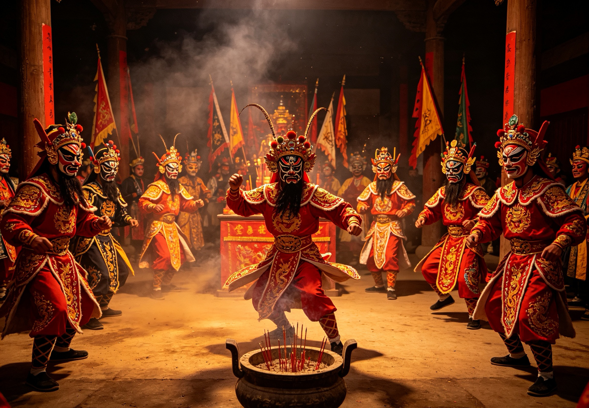
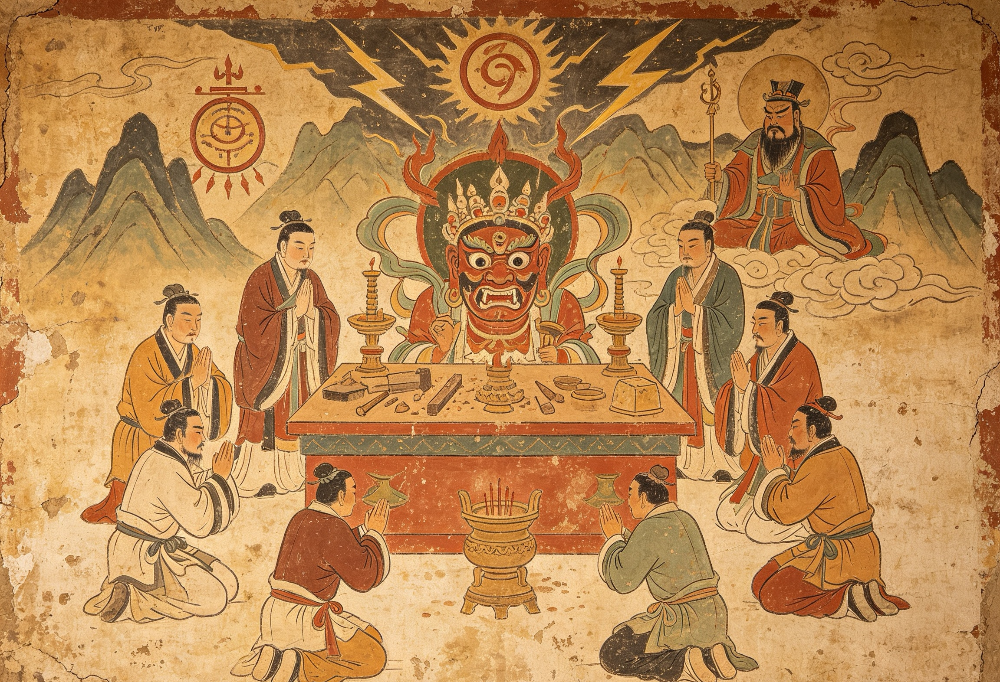

傩舞兴起，驱疫逐邪
傩舞兴起，乐舞相融
傩戏成型，广泛流传
剧目丰富，民间扎根
非遗传承，焕新而生
木雕彩绘，性格鲜明，是傩戏的灵魂。
动作古朴，节奏强烈，充满原始张力。
一唱众和，高亢激越，回荡在山谷。
开山辟路，斩妖除魔。

五行轮转，祈福纳吉。
铁面无私，浩然正气。
明察秋毫，断恶扬善。

民间传说，世代相传。
傩戏走进校园 传统文化薪火相传
2026-06-15国家级传承人工作室正式挂牌成立
2026-05-28非遗傩戏助力乡村振兴 文化赋能发展
2026-05-12安永柏老先生自小随父学习傩堂戏，1984年正式拜师学艺。通过多年的刻苦学习和钻研，91年艺成请职，全面掌握了德江傩堂戏的全部技艺。犹其是傩祭仪式、傩法事、傩歌傩舞、傩戏、傩技神功等享有盛誉。现有徒弟多人。安永柏老先生从小就受到傩戏的熏陶，1979年7月从稳坪镇木叶中学毕业后就在家随父亲安国胜学习傩艺技术，在傩戏系列法事、唱、跳得艺，并接职出师，1989年至1999年，投师安明举、安国儒老先生学习傩技绝活，得法出师，学会了傩堂戏唯一保存下来的绝技“开红山”等傩技绝活。多年来积极参加省、地、县组织的各项傩戏演出，其表演技艺在日本、深圳、省内外均受好评。2003年，参加“中国梵净山傩文化研讨会”傩戏演出，2004年参加“黄果树瀑布节天龙屯堡傩文化周”活动，2006年，应邀赴日本冲绳、东京进行傩戏表演，并参加了贵州省文化厅举办的“文化遗产日”活动。收藏有历代傩坛法器40余件，古籍科仪、戏本60余本。 他是这片土地上最鲜活的“非遗记忆”，用一生守护傩戏的薪火。
了解更多 →